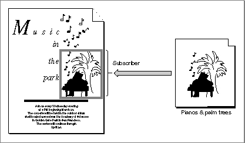

Subscribing to Non-Edition Files
Using the Edition Manager, a subscriber can read data directly from another document, such as an entire'PICT'file, instead of subscribing to an edition. This feature is for advanced applications that can set up bottleneck procedures for reading. Figure 2-26 shows a document that is subscribing directly to a'PICT'file.Figure 2-26 Subscribing directly to a
'PICT'file
For each application, the Edition Manager keeps a pointer to a bottleneck function. The Edition Manager never opens or closes an edition container directly. Instead, the Edition Manager calls the current edition opener. The
InitEditionPackfunction (described on page 2-74) sets up the current system opener function.To override the standard opener function, create an opener function that contains the following parameters:
FUNCTION MyOpener (selector: EditionOpenerVerb; VAR PB: EditionOpenerParamBlock): OSErr;Your opener needs to know which formats the file contains and how the data is supposed to be read or written.The opener function is passed an edition opener verb in the
selectorparameter, which identifies the action the opener function should perform. The opener can allocate a handle or pointer to contain information such as file reference numbers. This value is passed to the I/O routines in theioRefNumfield of the edition opener parameter block.The
eoOpenandeoOpenNewedition opener verbs (described in "Calling an Edition Opener" on page 2-64) return a pointer to a function to do the actual reading and writing.The following sections describe
- how to get the current edition opener
- how to set your own edition opener
- how to call an edition opener
- the edition opener parameters
Subtopics
- Getting the Current Edition Opener
- Setting an Edition Opener
- Calling an Edition Opener
- Opening and Closing Editions
- Listing Files That Can Be Subscribed To
- Reading From and Writing to Files
- Calling a Format I/O Function